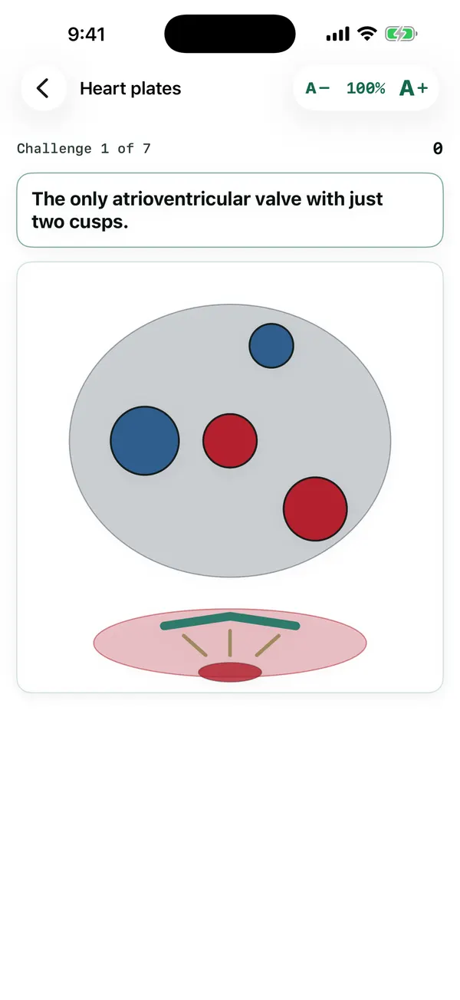

MedForge / Apps / Heart Plates
Heart Plates
Anatomy, one plate at a time.
Drawn plates of the heart: circulation, conduction, valves, listening areas, coronary vessels and the cardiac cycle. Name the structures, then follow the blood and the electrical impulse in order.
Free preview: six questions. Unlock the full rounds. $2.99/month or $19.99/year
Live demo of Heart Plates
Try it: tap the structure (Circulation plate)
Sample questions from this plate. The app has the full set, with the first plate free.
Try it: tap the structure (Conduction plate)
Sample questions from this plate. The app has the full set, with the first plate free.
Try it: tap the structure (Valves plate)
Sample questions from this plate. The app has the full set, with the first plate free.
Try it: tap the structure (Listening areas plate)
Sample questions from this plate. The app has the full set, with the first plate free.
Try it: tap the structure (Coronary vessels plate)
Sample questions from this plate. The app has the full set, with the first plate free.
Try it: tap the structure (Cardiac cycle plate)
Sample questions from this plate. The app has the full set, with the first plate free.
A real screen from Heart Plates
From the iPhone app, in a pre-release build. The Android app follows the same design, and the text size can be changed from 40% to 300% on every screen.

Every fact in this app is cited
These are the references this app draws on. Inside the app, each answer links to its source in a reading window that keeps your place.
- Heart murmurs (encyclopedia)National Library of Medicine, MedlinePlus · NIH / NLM MedlinePlus
- Mitral valve prolapse (health topic)National Library of Medicine, MedlinePlus · NIH / NLM MedlinePlus
- Heart valve diseases (health topic)National Library of Medicine, MedlinePlus · NIH / NLM MedlinePlus
- Cardiac CycleOpenStax, Rice University (peer-reviewed open textbook) · OpenStax (Rice University)
- Physiology, Coronary CirculationStatPearls Publishing, National Library of Medicine (NCBI Bookshelf) · NIH / NLM
- Physiology, Cardiac CycleStatPearls Publishing, National Library of Medicine (NCBI Bookshelf) · NIH / NLM
- Physiology, Heart SoundsStatPearls Publishing, National Library of Medicine (NCBI Bookshelf) · NIH / NLM
- Anatomy, Thorax, Heart Papillary MusclesStatPearls Publishing, National Library of Medicine (NCBI Bookshelf) · NIH / NLM
- Anatomy, Thorax, Heart Pulmonic ValveStatPearls Publishing, National Library of Medicine (NCBI Bookshelf) · NIH / NLM
- Heart block (encyclopedia)National Library of Medicine, MedlinePlus · NIH / NLM MedlinePlus
- How the Heart WorksNational Heart, Lung, and Blood Institute (NIH) · NHLBI / NIH
- Cardiac Muscle and Electrical ActivityOpenStax, Rice University (peer-reviewed open textbook) · OpenStax (Rice University)
- Heart AnatomyOpenStax, Rice University (peer-reviewed open textbook) · OpenStax (Rice University)
- Structure and Function of Blood VesselsOpenStax, Rice University (peer-reviewed open textbook) · OpenStax (Rice University)
- Structure of the HeartNational Cancer Institute, SEER Training Modules · NCI SEER Training / NIH
- Anatomy, Thorax, Aortic ValveStatPearls Publishing, National Library of Medicine (NCBI Bookshelf) · NIH / NLM
- Atrioventricular NodeStatPearls Publishing, National Library of Medicine (NCBI Bookshelf) · NIH / NLM
- Physiology, CardiovascularStatPearls Publishing, National Library of Medicine (NCBI Bookshelf) · NIH / NLM
- Anatomy, Thorax, HeartStatPearls Publishing, National Library of Medicine (NCBI Bookshelf) · NIH / NLM
- Physiology, Bundle of HisStatPearls Publishing, National Library of Medicine (NCBI Bookshelf) · NIH / NLM
- Anatomy, Abdomen and Pelvis: Inferior Vena CavaStatPearls Publishing, National Library of Medicine (NCBI Bookshelf) · NIH / NLM
- Anatomy, Thorax, Mitral ValveStatPearls Publishing, National Library of Medicine (NCBI Bookshelf) · NIH / NLM
- Histology, Purkinje CellsStatPearls Publishing, National Library of Medicine (NCBI Bookshelf) · NIH / NLM
- Physiology, Sinoatrial NodeStatPearls Publishing, National Library of Medicine (NCBI Bookshelf) · NIH / NLM
- Anatomy, Thorax, Superior Vena CavaStatPearls Publishing, National Library of Medicine (NCBI Bookshelf) · NIH / NLM